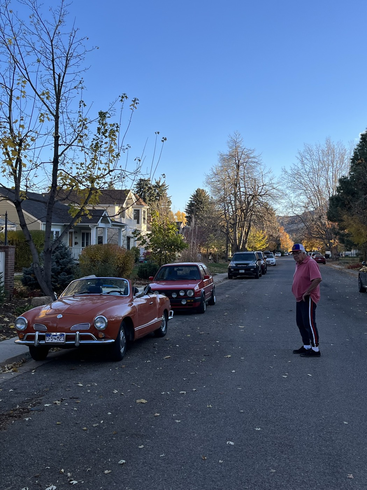
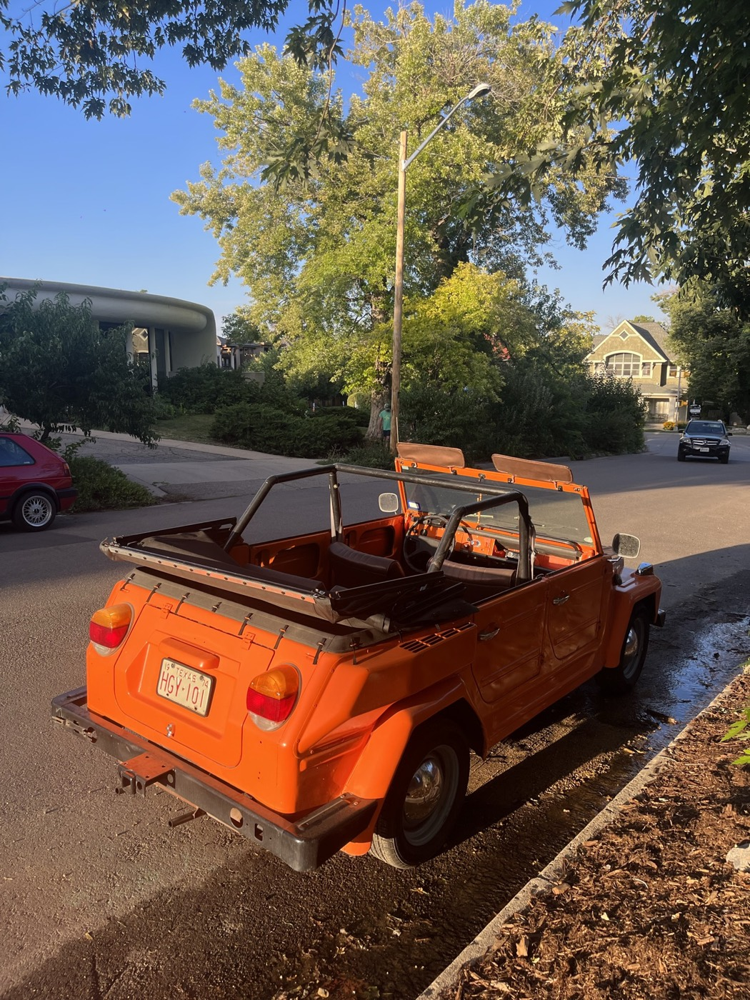
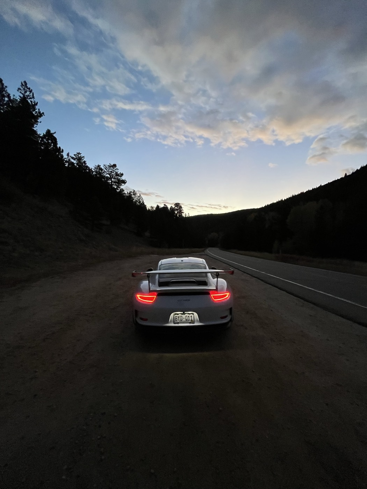
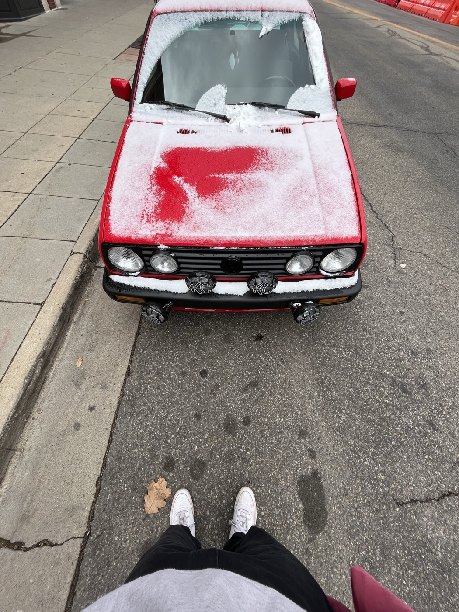
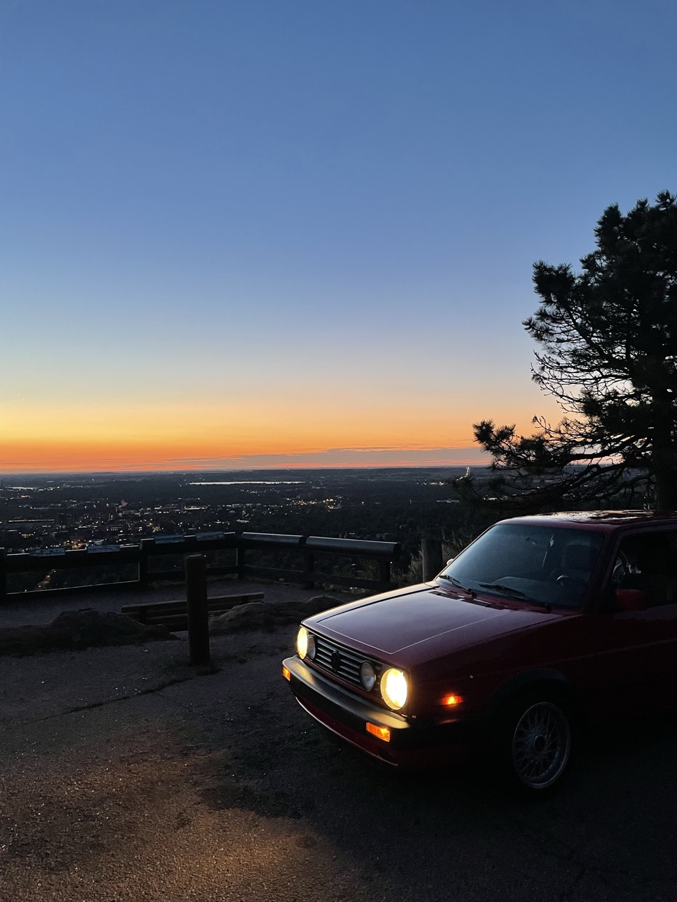

In my teenage years going into my twenties I've had the privilege of working on and driving many different kinds of cars. My Grandpa spurred this interest within my dad's side of the family. As my dad grew up, he'd watch Gramps fix up the neighborhood Volkswagen Bugs in his suburban garage in Heatherwood, outside of Boulder. His garage smelled like oil and cigarettes, lined with tools you could actually use to maintain your vehicle (quite the concept amongst the 21st century amalgam of proprietary parts and services needed for our large, plastic buckets). Near the end of his life, his hands were visibly rusty and scarred, almost shocking to look at. The wear extended to his wrists and stopped around the line of rolled up sleeves.
The Volkswagen Bug embodied the notion of the "people's car". Affordable, maintainable, accessible. You mainly get this with Japanese vehicles today.
I wanted to chronicle some thoughts on the cars I've been around and driven and to me, today, what makes a great car.

As I wrapped up high school, I was driving The Volkswagen Thing. Open air, doors off. To put the top on was to chain the unchainable. This thing was unruly and lawless and an absolute thrill in second gear where you heard what was going down. The stick felt like an industrial lever you pulled down. Not only did you hear it, you felt it under your feet where maybe a couple inches of metal separated you from the asphalt below.
This was such a Boulder car, man. People loved it and it felt so wild and free. It was so dangerous too, haha! Essentially it was a motorcycle in terms of risk. I think other appropriate areas to drive it would be Santa Cruz and parts of Mexico. Mine in particular was manufactured in Mexico.
Having a little bucket with no doors, no top, and an engine is a different feeling. It's not even quite a car. It's something else.
I never registered this damn car. It was not in its nature to be registered at the DMV. As such, it carried its original Texas plates from 1974.
I would rip this Thing around town with my friends and I vividly remember the hub cap just straight up popping off in the middle of the street on multiple occasions. Once it was promptly flattened by an oncoming car's tires.

This one was my dad's. I remember hearing this engine turn on for the first time and felt one of those "first time" feelings. Pure, exact, beautiful engineering echoed in a low hum of power throughout the garage.
There was a summer where I would go to the race track and properly open up the throttle and cornering capabilities of the GT3RS. I think my top speed all time was about 150 at High Plains.
Going to the track, I learned the real usage of these high end cars. Something like a GT3RS is only worth it if you are tracking it or have an unusually epic and paved road near its garage. It stops there. They are fast for a reason, and the interior feel is rugged and raw. You feel the road.
One of my favorite memories is waking at 5 AM for a Boulder Canyon drive with Felix through the rockies. The feel that morning was ethereal. On morning drives like that you get to touch something magic, the freshness of the day. It feels like defining the day. Looking back at a video of the drive, I now think… woah. Haha!


Before / after my gap year and during college this was my main. The seats were so 90's. All was so 90's. Got hot really quickly, though, you could hear it whine in the heat and it felt a bit laborious to move this one around.
Here we are today and the Ghia remains. When Gramps passed away last year he left me this. The best time to drive it? Boulder Fall. Crisp, open air, simple. I can't wait for that this year. Rest in peace Gramps.